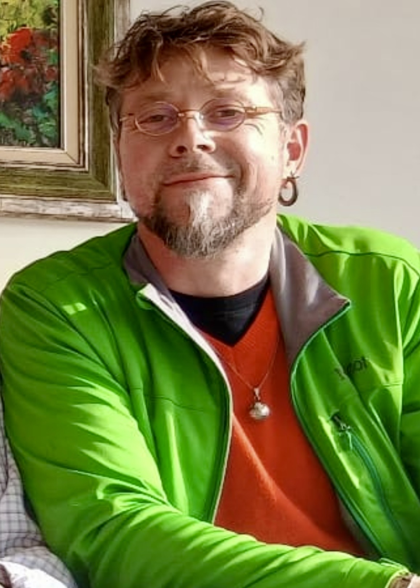

Sylvain Masclin
Assistant Teaching Professor · LES Department · UC Merced
Father, husband, runner, podcaster… a bit of English, some Mexican & lots of French. I bring all of those ingredients, and some secret ones, in the making of the magic potion that fuels my teaching.
My path to UC Merced wound from France, through Earth sciences in Lille and paleoclimatology in Grenoble, to seventeen months on the Antarctic ice at Terre Adélie — before landing in California's Central Valley. There at UC Merced, I earned a PhD on atmospheric and snow chemistry, came to deeply understand the power of being seen and valued regardless of where you come from or who you are, and built a conviction that the best teaching happens when learning feels natural, engaging, and immersive.
Since 2014 I have been building and delivering enthusiastic courses at UC Merced — where first-generation students are the norm, and where understanding environmental science is not an abstract exercise but an everyday reality.